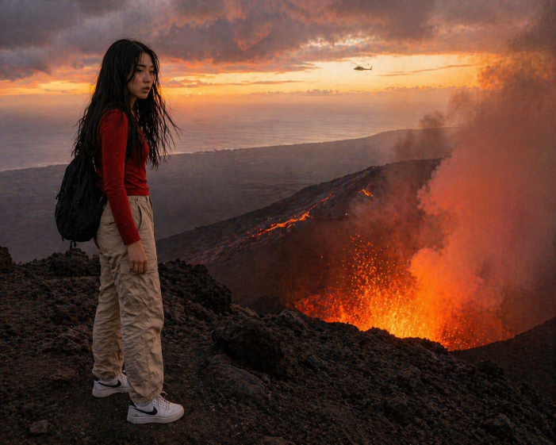
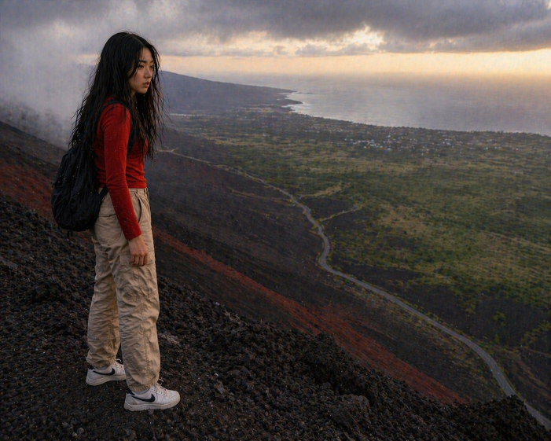
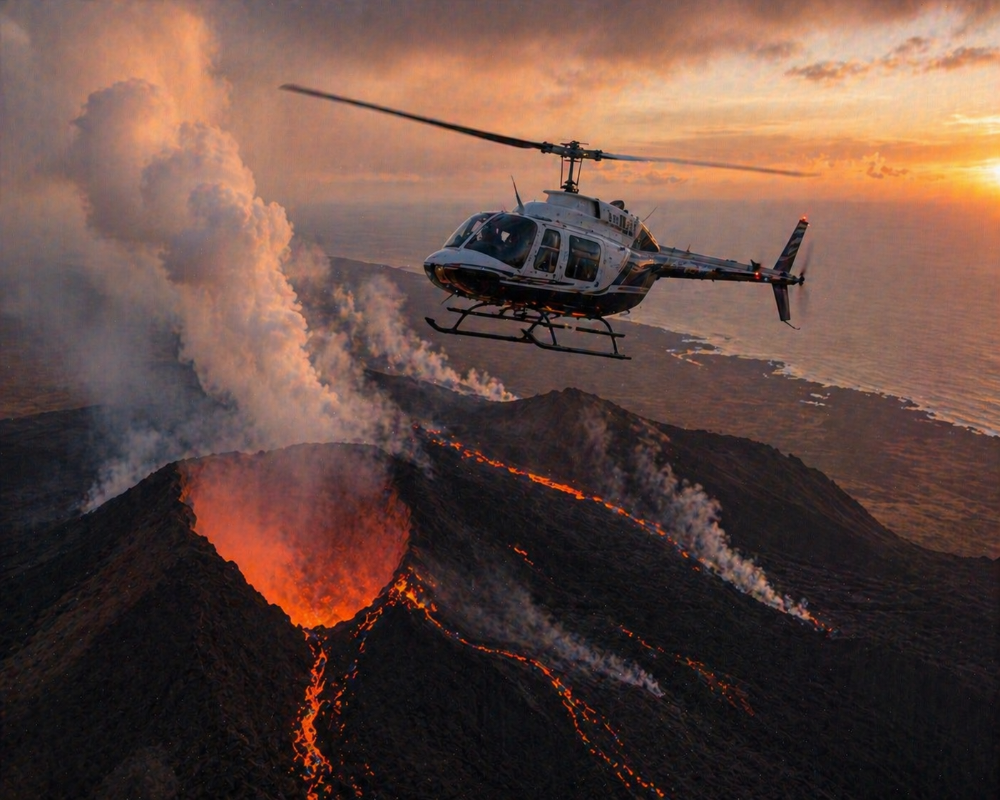
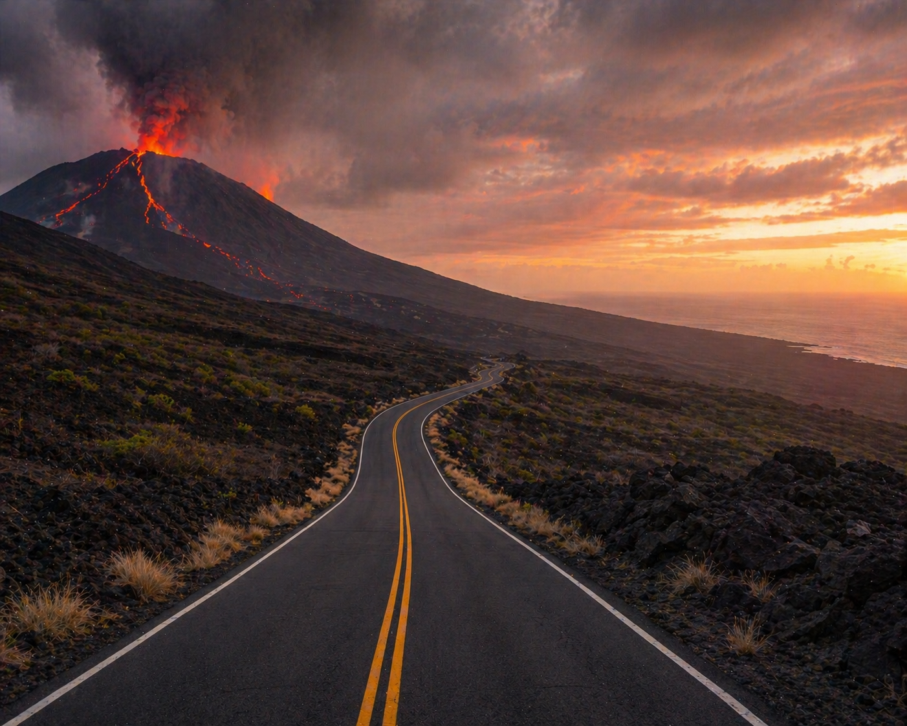

| Patricia stood at the edge of the volcano, the ground beneath her feet trembling with a low, constant rumble. Heat shimmered in the air, and thin cracks of glowing lava began to snake across the dark rock. The sky above was hazy with ash, turning the sunlight a strange orange colour. She wiped the sweat from her forehead and looked out across the vast landscape. In the distance, she spotted a helicopter circling cautiously, its blades cutting through the smoky air. It hadn’t seen her yet—but it might. |
 |
|
 |
Her heart pounded as she weighed her options. If she stayed, the helicopter could be her quickest way out—but there was no guarantee it would come close enough, or in time. The rumbling beneath her feet grew stronger. Alternatively, she could make a run for it, heading back down the steep path toward the base of the volcano and the road that led back to town. It would be dangerous and exhausting, but at least it was something she could control. Patricia took a deep breath, knowing she had only moments to decide before the volcano made the choice for her. |
 Wait for the Helicopter |
 Run to the Road |